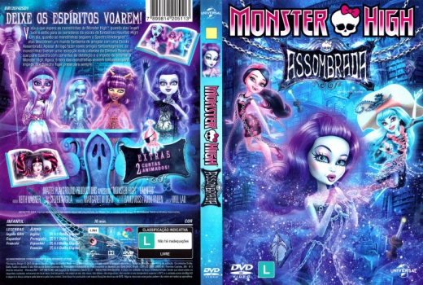

Outro Título:Monster High: Haunted
País:United States, 75 minutos
Idiomas falados:Espanhol, Francês, Inglês, Português
Gênero(s):Animação, Família, Fantasia
Diretor(s):Dan Fraga, William Lau
Escritor(es):Keith Wagner
Codec:MPEG-2 (DVD)
Número: 5949


Certificado:L
Sinopse:
Quando elas levam todo o estilo para os corredores da assustadora Haunted High! Um dia, quando as monstrinhas seguem a Spectra Vondergeist™, elas descobrem um mundo fantasma de arrepiar com uma escola assombrada. Apesar de logo fazer novos amigos fantasmagóricos, as monstrinhas tiveram uma recepção nada calorosa da Diretora Revenant, que pune Spectra com correntes de detenção e a impede de retornar a Monster High. Agora, é hora das amiguinhas monstras virarem fantasmas para impedir que Spectra desapareça para sempre.
Elenco:


Tipo de mídia: DVD5,
Legendas: Espanhol, Francês, Inglês, Sem Legendas
Alugado: Não
Tela: Anamorphic Widescreen